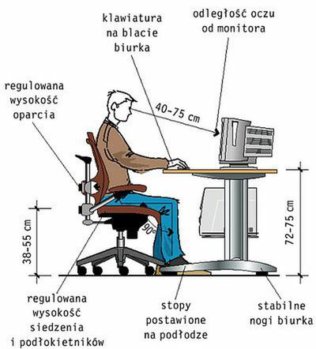

Stosowanie się do przepisów BHP pracy przy komputerze pozwoli nam uniknąć nieprzyjemnych skutków wpatrywania się w monitor przez długie godziny.
Bardzo ważnym elementem BHP jest dobranie odpowiedniego biurka i krzesła. Biurko powinno mieć odpowiednią wysokość i odpowiedni rozmiar aby zmieścić wszystkie niezbędne rzeczy,
a krzesło powinno oferować regulację odchylenia, wysokości oraz podłokietniki.
Monitor osoby pracującej z komputerem powinien być oddalony od twarzy na ok. 40-70cm.
Przestrzeń biurowa powinna być tak podzielona, że na każdego pracownika powinno przypadać 2m2.
Jeśli osoba zatrudniona pracuje przy komputerze przez większość czasu, może wymagać od pracodawcy krótkich, 5 minutowych przerw od ekranu na każdą godzinę pracy.
Warto wykorzystać ten czas aby dać oczom odpocząć i rozluźnić mieśnie.
Przykładowy obrazek z wymiarami stanowiska komputerowego:

Instrukcja BHP przy obsłudze komputera i drukarki:
Przed przystąpieniem do pracy pracownik powinien:
Przewietrzyć pomieszczenie, w którym znajduje się stanowisko pracy
Skontrolować wyposażenie stanowiska pracy
Dostosować biurko, krzesło i podnóżek do wymiarów swojego ciała
Przygotować komputer do pracy przez:
- podłączenie go do sieci zasilającej,
- regulację jasności i kontrastu pomiędzy znakami a tłem w zależności od potrzeb i aktualnych warunków otoczenia
Przygotować potrzebne dokumenty oraz programy użytkowe do pracy
Po zakończeniu pracy pracownik powinien:
Wyłączyć komputer, monitor, drukarkę i pozostałe urządzenia oraz sprzęt stanowiskowy zasilany energią elektryczną>
Uporządkować i sprzątnąć stanowisko pracy
Schować dyskietki, pozamykać szafy i biurko
Sprawdzić, czy pozostawiony sprzęt komputerowy nie stwarza jakichkolwiek zagrożeń i czy jest on prawidłowo
zabezpieczony przed uruchomieniem przez osoby postronne.
Zabrania się:
Spożywania posiłków podczas pracy na stanowisku komputerowym,
Palenia tytoniu w pomieszczeniach pracy z komputerem,
Samowolnego naprawiania urządzeń komputerowych, sprzętu oraz wyposażenia zasilanego energią elektryczną,
Używania do czyszczenia komputera i drukarki rozpuszczalników lub innych płynów łatwopalnych,
Zezwalania na obsługę komputera osobom nieupoważnionym.
W trakcie wykonywania pracy pracownik powinien:
Komputer i drukarkę obsługiwać tylko zgodnie z instrukcją obsługi zawartą w dokumentacji producenta, nie stwarzając
zagrożeń przez ich niewłaściwe użytkowanie
Zapewnić przed klawiaturą wystarczającą przestrzeń do podparcia rąk i dłoni
Stosować odległość ekranu monitora od oczu wynoszącą od 400 do 750 mm
Nie dopuścić do komputera osób nieupoważnionych.
Postępowanie w przypadku awarii:
W przypadku pożaru ściśle stosować się do instrukcji ochrony przeciwpożarowej, z którą powinien zapoznać się każdy
pracownik
W innych przypadkach natychmiast zawiadomić przełożonego i (w razie potrzeby) właściwe służby ratownicze.
Postanowienia końcowe
Kobiety w ciąży mogą pracować bezpośrednio przy monitorze ekranowym nie więcej niż 4 godziny na dobę
W razie wątpliwości, co do zachowania warunków bezpieczeństwa pracy przy wykonywaniu poleconych czynności,
pracownik ma prawo przerwać pracę i zwrócić się do przełożonego o wyjaśnienie sytuacji.
Każdy zaistniały wypadek przy pracy należy zgłaszać przełożonemu, a stanowisko pracy pozostawić w takim stanie, w
jakim zdarzył się wypadek.
Instrukcja BHP pracy z drukarką
Wymogi ogólne
Drukarka powinna być zainstalowana przez wykwalifikowanych pracowników serwisu obsługi.
Drukarka powinna być ustawiona w miejscu zapewniającym swobodny dostęp.
Przed rozpoczęciem użytkowania drukarki pracownik powinien zapoznać się z instrukcją obsługi danego
modelu urządzenia.
Drukarka powinna być ustawiona z dala od grzejników, w miejscu nie narażonym na kurz, wibrację i bezpośrednie
działanie promieni słonecznych.
Na Stanowisku pracy Zabrania się:
Samodzielnego naprawiania urządzenia.
Otwierania wszelkich pokryw w trakcie procesu drukowania.
Przesuwania, czyszczenia lub wykonywania jakichkolwiek czynności innych niż zwykła obsługa bez
uprzedniego odłączenia urządzenia od sieci zasilania.
Czynności do wykonania przed rozpoczęciem pracy:
Sprawdzić kompletność technicznego wyposażenia stanowiska pracy oraz stan kabli zasilających drukarkę
Upewnić się, że stan kabli zasilania elektrycznego oraz stan techniczny urządzenia zapewniają bezpieczeństwo
pracy, a zwłaszcza ochronę przed porażeniem prądem elektrycznym.
Przygotować papier do drukowania i upewnić się, że jego parametry użytkowe są zgodne z zaleceniami
producenta urządzenia.
Jeśli urządzenie wymaga uruchomienia odrębnym włącznikiem, włączyć przycisk uruchamiający.
Zasady i sposoby bezpiecznego wykonywania pracy:
Uruchomić program drukowania dokumentu za pomocą komputera.
Obserwować komunikaty pojawiające się na monitorze komputera, wyświetlaczy lub za pomocą kontrolek
drukarki i postępować zgodnie z instrukcją użytkowania urządzenia.
W przypadku pojawienia się komunikatów eksploatacyjnych takich jak „zablokowany papier”, „wyczerpanie
tonera” itp., do wykonania czynności obsługowych przystąpić po wyłączeniu zasilania.
Czynności do wykonania po zakonczeniu pracy:
Wyłączyć urządzenie (o ile instrukcja użytkowania nie stanowi inaczej).